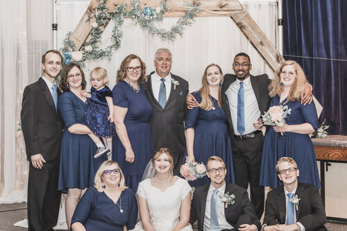
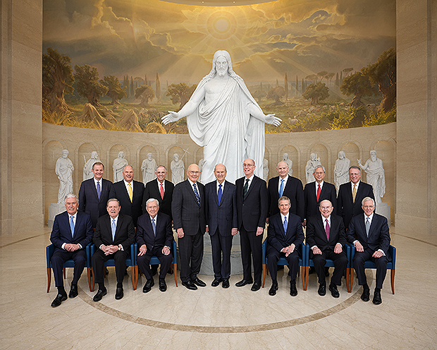
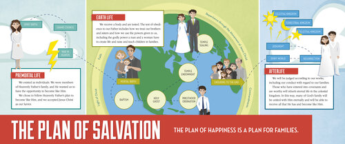
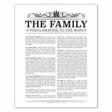

Week 1
Why are families important? Heavenly Father gave us families to have a place where we are loved and where we can be taught the gospel. It is a key unit in His plan for us. I want to be with my family forever.
Week 2
What is the roll of prophets in proclaiming the doctrine of eternal families? Heavenly Father gives us latter-day prophets to help us know what He wants us to do. One good example of this is when “The Family: A Proclamation to the World.” came out. It has shown to be very helpful in a world where values shift with popular demand. It has helped me know what doctrine I should be following when it comes to my role as a wife, mother and daughter of God.
Week 3
Why is the family central to Heavenly Father's plan, and why do we need a physical body? “the family is central to the Creator’s plan for the eternal destiny of His children” (“The Family: A Proclamation to the World,” ChurchofJesusChrist.org). We came to earth to gain a physical body so that we can experience all that God has in store for us. Our bodies are a gift. One of the things we are here to do is to learn to control our bodies by abiding by the commandments Heavenly Father has given to us.
Week 4

Why is marriage important in Heavenly Father's plan? The scriptures say that "neither is the man without the woman". We were designed to work together with each having equal but different rolls to play. These rolls work together to help a family be successful through good and hard times. If each is willing to give what they are able to the marriage, it will be a happy one, and become an eternal one.
Week 5
Why do families need to be sealed together? Families love each other. Can you imagine heaven without your family? I can not. When we do family history and participate as proxy for our ancestors in the temple, we are sealing our family together. This important work is necessary for the exaltation of all of God's children. Participating in this work is gathering Israel.
Week 6
What is the marriage covenant? The marriage covenant is the new and everlasting covenant. It is the final covenant we make in the temple. It seals a husband and wife together for eternity. If this covenant is kept in this life, there is joy. It does not mean that hard things will not happen, it means that there are two committed covenant keeping people that will work through those hard things together. Looking for Christlike attributes in our spouse and developing those attributes in ourselves will help a marriage to become eternal. When we are sealed in the temple, there is the promise of what can be if we keep the covenant we make when we marry.
Week 7
Where should sexual intimacy occur? Sexual intimacy is only to be used between a husband and wife. It is meant to bring children into the world and to fortify the relationship between a husband and wife. I chose a picture of the Savior because breaking the law of chastity is not outside His reach.
Week 8
Is having a family still important? When and how many children a couple has is a decision that should be made between them and God. Children are truly a gift. When we have children we are partnering with God in the plan of salvation. Having children brings great joy. It is the best and hardest thing I have ever done. I am grateful I am a mother to six wonderful children.
Week 9
Does partnership in a marriage matter? "Husbands and wives are meant to have “an equal voice and vote” in making decisions (L. Whitney Clayton, “Marriage: Watch and Learn,” Ensign or Liahona, May 2013, 84)." As my husband and I have worked together in our home, we have had many years of happiness. I am grateful for the teachings of the church on marraige. Following these teachings has blessed my life and the lives of each of my family members.
Week 10
What does being a mother mean? In one sense it is having and raising children, however it is so much more. It is nurturing those around you in your home, your church and your community. Many women have nurtured me throughout my life, but my mom has had the biggest impact on me. The older I get the more I appreciate her example to me of how to be a righteous woman.

What does being a father mean? It is showing up. It is presiding, providing and protecting family. My dad has a special place in my heart. He provided me with a spiritual foundation. I especially remember when I was going through the temple for the first time. He sat me down and told me that I was going to see a lot of things and was not going to remember everything. He advised me to just be in the moment and not worry about that too much. What he then said was to focus on the blessings in the initiatory. Because of that advise, the initiatory has always been special to me and reminds me of him.
Week 11

Following the example of Jesus Christ in how He treated children, will bless our life and the lives of the children we come in contact with. I love the story in the Book of Mormon, when he blessed each child. It helps me understand how He feels about children. I believe it is a parent's responsibility to teach and discipline children in love.
Week 12
What do we do when things do not go as we think they should, or how the gospel teaches they should in our families? I believe if we continue in faith and trust that Heavenly Father and Jesus know what is best, we can have peace, especially when things are not going well. My family does not fit as the perfect ideal for a family. We are imperfect in many ways. When I am sad that things are not what I would want them to be, I can turn to the Lord and trust in His timing and plan for me and my family.
Week 13
Where do repentance and forgiveness come in establishing an eternal family? I believe that the family is our learning ground for developing into an eternal family. Because none of us are perfect, we need repentance. Because none of us are perfect we need to forgive. Having grace for our family members to make mistakes and learn from them will hopefully help my family progress towards becoming an eternal one.
Week 14
How can I defend the family in a world that tries to belittle it's importance? I believe the best thing I can do is help my family be a happy unit in the world. If I strengthen my family, I am defending it. I remember when The Family, A Proclamation to the World came out, I read it and thought, of course this is true. It did not seem that earth shattering. As I have grown older and watched an increasingly wicked world, it has shown me that the proclamation stands out as different.